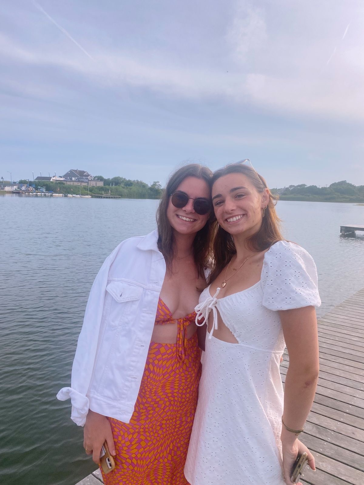
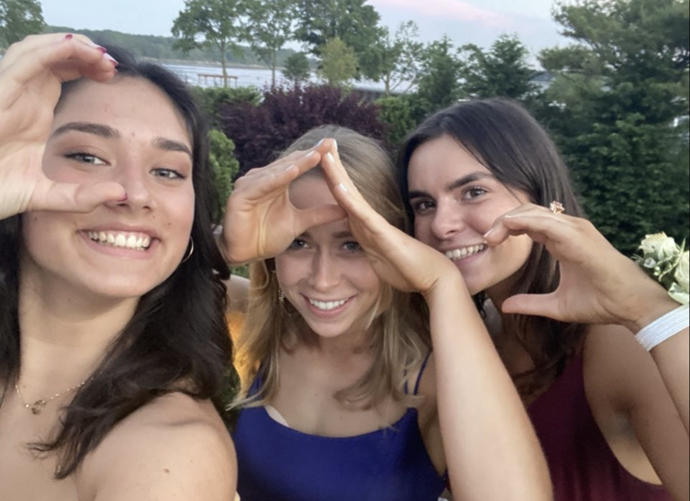
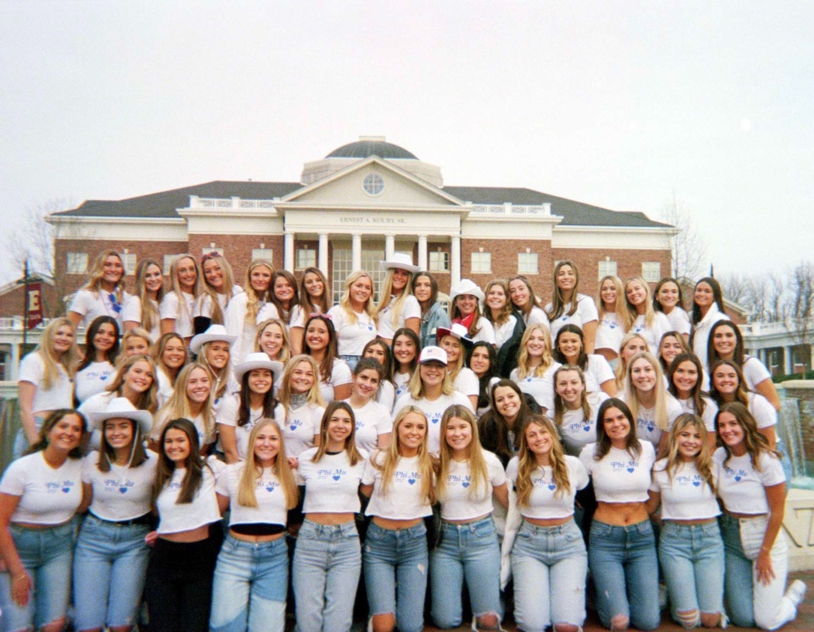

Childhood

My name is Emma Gagliano. I am from Rye, New York and have lived there most of my life. I was born in New York city to my parents, Dave and Meighan. We moved to Rye after we lived in Canada for two years! I have a sister named Bella who is two years younger then me. Here's a photo of us from this summer!
Growing up I played lots of sports but ended up sticking with dance and laccrosse! I did dance all throughout high school and miss it a lot. I also had lots of friends from pre-school that are still my best friends today! Me and my family are really close. I have a lot of first cousins who live in New Jersey so I go there often.
Education
Elementary through High School
I attended Osborn Elementary School from Kindergarten through Fifth grade. After that I went to Rye Middle School and then Rye High School.
In high school I was involved in the Cancer Awareness club and became the treasurer my senior year. For that I worked with my two co-officers and helped plan and manage funding for events and meetings.
I was also a member of the Adopt-A-Grandfriend club, which I loved! We would go to the senior home down the street once a week and just talk to them and hear about their life stories. I always thought that was super cool!
College
Now I am a sophmore at Elon University where I am pursuing a Elementary Education degree with a minor in Communications.
I am a member of the Phi Mu sorority where I help raise money by attending events, like elonthon and Bonnamu for our philanthropy which is the Childrens Miracle Network, a non-profit organization that raises money benefiting childrens hospitals throughout the US.
